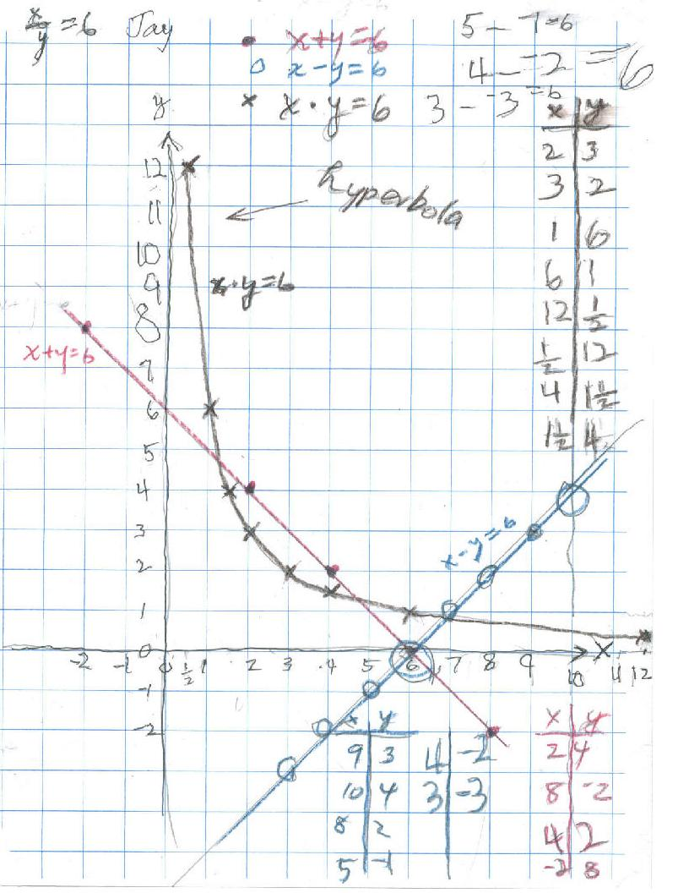

Jay's graphs
Jay graphed x+y=6, x-y=6 and x*y=6 . Don then suggested x/y=6, but they never finished that.

Notice the arithmetic Jay did in the process of doing these graphs: 4 - -2 = 6 , 4 x 1 1/2 = 6, and 8 + -2 = 6. He has a great feel for signed number arithmetic.